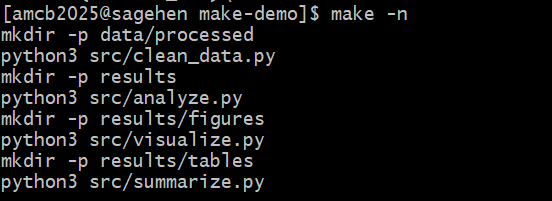

Advanced Make Patterns
Last updated on 2026-08-27 | Edit this page
Overview
Questions
- What are pattern rules and automatic variables in Make?
- How do I use Make variables effectively?
- When should I use Make vs. other workflow tools?
- How do I debug Makefiles?
Objectives
- Use Make variables for DRY (Don’t Repeat Yourself) code
- Apply pattern rules and automatic variables for complex pipelines
- Debug common Makefile errors
- Understand when to use Make vs. other workflow tools
Pattern Rules and Automatic Variables
For complex projects with many similar steps, use pattern rules:
This single rule means any .csv file can be converted to
.json.
A Complete Advanced Makefile
MAKEFILE
# Reproducible analysis pipeline
# Usage: make (run entire pipeline)
# make clean (clean results)
# make help (show help)
PYTHON := python3
SHELL := /bin/bash
.SHELLFLAGS := -eu -o pipefail -c
# Input and output files
RAW_DATA := data/raw/data.csv
PROCESSED_DATA := data/processed/data_clean.csv
ANALYSIS_RESULTS := results/analysis_results.csv
FIGURES := results/figures/main_plot.pdf results/figures/secondary.pdf
TABLES := results/tables/stats.txt
# Default target
.PHONY: all
all: $(FIGURES) $(TABLES)
# Download data (only if doesn't exist)
$(RAW_DATA):
@echo "Downloading data..."
mkdir -p data/raw
$(PYTHON) src/download_data.py -o $@
# Clean data
$(PROCESSED_DATA): $(RAW_DATA) src/clean_data.py
@echo "Cleaning data..."
mkdir -p data/processed
$(PYTHON) src/clean_data.py $< -o $@
# Run analysis
$(ANALYSIS_RESULTS): $(PROCESSED_DATA) src/analyze.py
@echo "Running analysis..."
mkdir -p results
$(PYTHON) src/analyze.py $< -o $@
# Generate figures
$(FIGURES): $(ANALYSIS_RESULTS) src/visualize.py
@echo "Generating figures..."
mkdir -p results/figures
$(PYTHON) src/visualize.py $< -o results/figures/
# Generate summary table
$(TABLES): $(ANALYSIS_RESULTS) src/summarize.py
@echo "Generating summary table..."
mkdir -p results/tables
$(PYTHON) src/summarize.py $< -o $@
# Clean targets
.PHONY: clean clean-all help
clean:
rm -rf results/
clean-all: clean
rm -rf data/processed/
help:
@echo "Reproducible Analysis Pipeline"
@echo "============================="
@echo ""
@echo "Available targets:"
@echo " make all - Run entire pipeline (default)"
@echo " make clean - Remove results/"
@echo " make clean-all - Remove results/ and processed data"
@echo " make help - Show this message"Make + HPC: Orchestrating SLURM Jobs
Make can orchestrate not just local commands but job submissions to HPC clusters:
MAKEFILE
SLURM_ARGS := --time=04:00:00 --cpus-per-task=8 --mem=32G
.PHONY: submit-processing
submit-processing:
sbatch $(SLURM_ARGS) --job-name=process \
--output=logs/process.log \
src/process.sh data/raw/samples.csv data/processed/
.PHONY: submit-analysis
submit-analysis: submit-processing
sbatch $(SLURM_ARGS) --job-name=analyze \
--dependency=singleton \
--output=logs/analyze.log \
src/analyze.sh data/processed/ results/We’ll cover SLURM integration in depth in later episodes.
Debugging Makefiles
When NOT to Use Make
Make is great for simple-to-moderate workflows but has limitations:
- No built-in parallelization control: Hard to parallelize interdependent jobs
- Complex data dependencies: Hard to express “if any file in this directory changes”
- Interactive feedback needed: Make doesn’t check for user input mid-workflow
For complex bioinformatics or machine learning pipelines with hundreds of jobs, consider:
- Snakemake: Python-based workflow tool, better parallelization
- Nextflow: Domain-specific workflow language, excellent HPC support
- Dask/Luigi: Python libraries for workflow orchestration
But for most research analyses, Make is simple, effective, and universal (available on virtually every Unix system).
Tips and Best Practices
-
Include a
.PHONY: alltarget: Defines the default workflow - Use variables: Makes your Makefile DRY and maintainable
- Add @echo statements: Provides user feedback on what’s happening
- Include help target: Document your pipeline
- Separate concerns: One rule per logical step
- Use relative paths: Makes Makefiles portable
-
Test your Makefile: Run
make cleanthenmaketo ensure reproducibility - Version your Makefile: Track it in git like any other source code
Exercise: Incremental Rebuilds
Given a working Makefile with targets for process,
analyze, and visualize:
- Run
maketo build everything - Touch only
src/visualize.py(touch src/visualize.py) - Run
make -nto see what would be rebuilt
Question: Why does Make only re-run the visualization step and not the earlier steps?
Then modify the Makefile to add a clean-all target that
removes both results and processed data.

make -n on Sagehen HPC previews
every command in the four-stage pipeline without running anything.BASH
$ touch src/visualize.py
$ make -n
python3 src/visualize.py results/analysis.csv results/figure.pngMake only re-runs the visualization step because:
-
src/visualize.pyhas a newer timestamp thanresults/figure.png - But
src/analyze.pyhas NOT changed, soresults/analysis.csvis still up-to-date - And
src/process.pyhas NOT changed, sodata/processed/data_clean.csvis still up-to-date
Make traces the dependency graph and only re-runs targets whose prerequisites are newer than their outputs.
The clean-all target:
- Variables, .PHONY targets, and special variables ($@, $<, $^) make Makefiles clean and maintainable
- Pattern rules let you define one rule for many similar transformations
- Make can orchestrate HPC job submissions for parallel processing
- Debug with
make -n(dry run) andmake -d(debug output) - A good Makefile with help and clean targets makes your workflow self-documenting
- For complex pipelines with hundreds of jobs, consider Snakemake or Nextflow